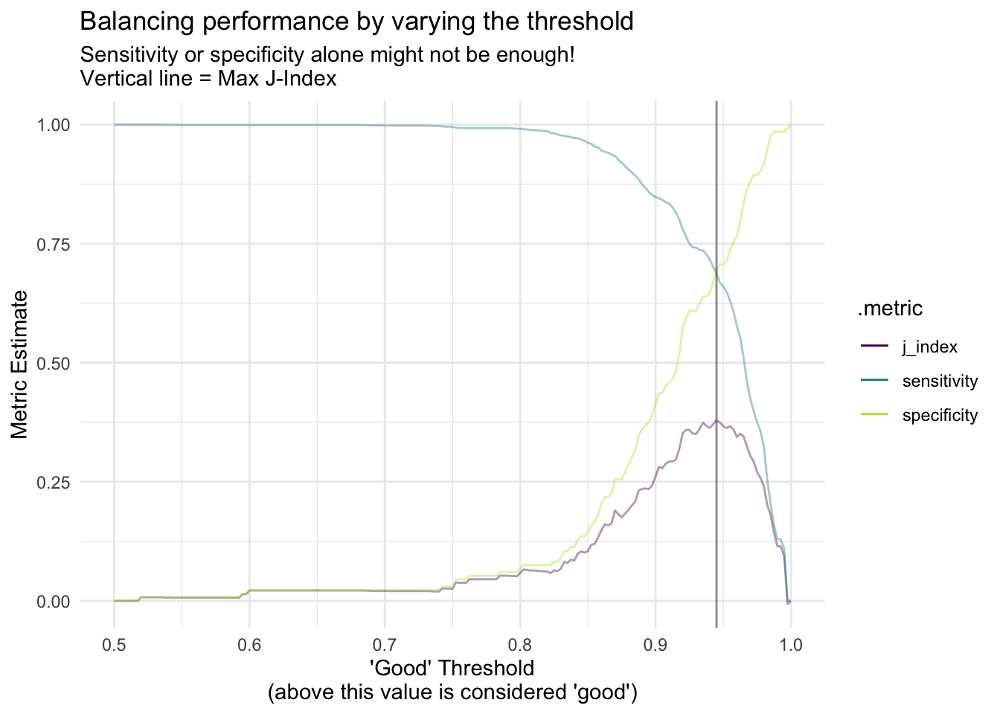

Despite all of the noise of AI-generated art and ChatGPT, 2022 was a great year for data science. These are some of my favorite tricks that I will continue to explore in 2023.
Data science had an awesome year in 2022. The list below highlights some of my favorites that I hope you test drive in 2023 (if you haven’t already!). Happy belated New Year folks!
1. Probably
The probably package, developed by Max Kuhn and Davis Vaughan at Posit, is in early stages of development and presents a new (at least, new to me) approach to assigning more realistic discrete class predictions. One initial question you might have is Where exactly should I use probably in a modeling pipeline? - Davis Vaughan addresses this in detail and developed {probably} as a “post processing step after the model has been fit, but before the model performance has been calculated.”
This package helps programmatically identify a more appropriate threshold / cutoff for class predictions using Youden’s J statistic (or “J-index”). The statistic is implemented in the {yardstick} package and can be accessed via yardstick::j_index(). So, what’s with the J statistic?
J = sensitivity + specificity - 1
The maximum value of J is 1 when there are no false positives and no false negatives
This technique comes in handy when a threshold of 50% (or 0.5) may not be the most appropriate for assigning a binary classification, especially when class imbalances exist.
Let’s create a basic tidymodels workflow to fit Lending Club loan data to a logistic regression and predict whether a loan is good or bad. The code below was pulled directly from the source example written by Davis Vaughan:
library(parsnip)library(probably)library(dplyr)library(rsample)library(modeldata)library(ggplot2)data("lending_club")lending_club_modified <- lending_club |> dplyr::mutate(Class =relevel(Class, "good")) |> dplyr::select(Class, annual_inc, verification_status, sub_grade)set.seed(123)split <- rsample::initial_split(lending_club_modified)lending_train <- rsample::training(split)lending_test <- rsample::testing(split)# Note: 7,008 records are "good" loans and 384 are "bad"logi_reg_fit <- parsnip::logistic_reg() |> parsnip::set_engine("glm") |> parsnip::fit(formula = Class ~ ., data = lending_train)predictions <- dplyr::bind_cols( lending_test,predict(logi_reg_fit, new_data = lending_test),predict(logi_reg_fit, new_data = lending_test, type ="prob"))threshold_data <- predictions |> probably::threshold_perf(truth = Class, estimate = .pred_good, thresholds =seq(0.5, 1, by =0.0025)) |> dplyr::filter(.metric !="distance") |> dplyr::mutate(group = dplyr::case_when(.metric =="sens"~"1", .metric =="spec"~"1",TRUE~"2"))max_j_index_threshold <- threshold_data |> dplyr::filter(.metric =="j_index") |> dplyr::filter(.estimate ==max(.estimate)) |> dplyr::pull(.threshold)ggplot2::ggplot(threshold_data, aes(x = .threshold, y = .estimate, color = .metric, alpha = group)) + ggplot2::geom_line() + ggplot2::theme_minimal() + ggplot2::scale_color_viridis_d(end =0.9) + ggplot2::scale_alpha_manual(values =c(.4, 1), guide ="none") + ggplot2::geom_vline(xintercept = max_j_index_threshold, alpha = .6, color ="grey30") + ggplot2::labs(x ="'Good' Threshold\n(above this value is considered 'good')",y ="Metric Estimate",title ="Balancing performance by varying the threshold",subtitle =paste0("Sensitivity or specificity alone might not be"," enough!\nVertical line = Max J-Index"))

The max_j_index_threshold has a value of 0.945 and the above viz helps supports the case for changing the discrete classification threshold from the baseline value of 0.5 (where a prediction probability above 0.5 indicates a “good”). Neat package with some other capabilities that I’m going to keep an eye out for.
2. Arrow + DuckDB
Earlier in 2022, there was a lot of excitement on my Twitter feed with devs and data scientists discussing larger-than-memory data manipulation and ultra-fast ETL with DuckDB, a new analytical data management system with bindings for Python and R. DuckDB offers a parallel vectorized execution engine for zero-copy query of Apache Arrow data sets - Perfect for my world of mostly tabular data. DuckDB streams query results back to Arrow and this is possible via a SQL interface and API. As DuckDB puts it, they provide “an in-process SQL OLAP database management system.”
Below are some of my favorite DuckDB overviews and tutorials:
If the above don’t make it clear, using dplyr with Arrow and DuckDB is a breeze. I haven’t yet mentioned the Apache Parquet file format since I find it secondary to the above, but Arrow and DuckDB provide an easy approach to working with Parquet (and other) file formats and filesize (compared to a CSV) can be slimmed by an order of magnitude. Let’s dive into some stats, below, benchmarked by Christophe Nicault. The benchmarks relate to an 8GB CSV file with 59 million observations:
Size on Disk
Query Performance
Size vs Performance
3. Encryption with R
R’s sodium package provides a binding to libsodium for higher-level cryptographic tooling. I first learned of {sodium} while working with Google BigQuery and learning about R’s gargle package for securely managing access credentials. Another package I’d like to point attention to is cyphr. I’ve used a combination of these packages for creating secure access to encrypted data objects.
I’d like to walk through two examples using these encryption tools:
Intro to {sodium} for keypair generation, message encrypt / decrpyt
Keypair gen with {sodium} + file encrypt / decrpt with {cyphr}
Installation from source on macOS or Linux requires libsodium
On macOS, install via homebrew: brew install libsodium
On Debian or Ubuntu: sudo apt-get install -y libsodium-dev
On Fedora: sudo yum install libsodium-devel
On CentOS / RHEL, install via EPEL:
sudo yum install epel-release
sudo yum install libsodium-devel
Intro to Sodium
The following example uses {sodium} to generate a keypair and encrpt / decrypt a serialized message (representing the iris data set). One major benefit of encrypting objects like this is that you can publicly expose these encrypted objects since you alone hold the key to decrypt them. If you’re working with GitHub Actions, GitLab CI/CD, or another git-backed repository, you can save these encrypted messages in your public repo - If someone forks or clones your repository, they’ll be unable to decrypt the object without the hash key initially created in the keypair generation step.
The example below was written by Jeroen Ooms on rOpenSci and is part of the documentation for the {sodium} package. I added the last step to show how to unserialize() an object previously decrypted.
library(sodium)# Generate keypair:key <- sodium::keygen()pub <- sodium::pubkey(key)# Encrypt message with pubkeymsg <-serialize(iris, NULL)ciphertext <- sodium::simple_encrypt(msg, pub)# Decrypt message with private keyout <- sodium::simple_decrypt(ciphertext, key)# Unserialize the decrypted message & assign iris data to new objiris_new <-unserialize(out)
Sodium + Cyphr
Using the {sodium} and {cyphr} packages, the code snippets below showcase three key steps: 3a) data encryption, 3b) in-line decryption (to be used as a script intended to run with a GitHub Actions Workflow every six hours), and 3c) the GitHub Actions YAML file to configure the automation workflow.
Using this approach, I can safely expose an encrypted RDS file on my public GitHub repo that contains secret API credentials for accessing Meetup.com and fetching new events that may have been posted. The encrypted RDS file can only be decrypted using the keypair hash saved with the MEETUP_PWD environment variable on my GitHub repo, a secret env var only visible to me.
GitHub Actions
To learn how to use secrets for use with GitHub Actions, the official Actions/Encrypted Secrets documentation is an excellent end-to-end resource. A generalized overview of how to configure your GitHub Actions Workflow is available on GitHub’s Actions/Workflow Syntax documentation. A brief overview of major updates to GitHub Actions for R Users was published on the Tidyverse Blog in June 2022, with the most complete resource for R related GitHub Actions being on r-lib/actions.
NOTE: For the purposes of GitHub Actions and the config YAML file covered in Step 3c, this file lives in the following path on my GitHub repo: ~/.github/workflows/main.yml
Step 3a: Encrypt
# The following is a one-time key encryption setuplibrary(sodium)library(cyphr)library(meetupr)# After doing a one-time interactive auth with {meetupr},# your Meetup token will be stored as an RDS file in the # same path as your {meetupr} package:token_path <-path.expand(file.path("~", "Library", "Application Support", "meetupr", "meetup_token.rds") )meetupr::meetup_auth(token =NULL,cache =TRUE,use_appdir =FALSE,token_path = token_path)# Encrypt the existing token to safely save # meetupr_secret.rds in a public reposodium_key <- sodium::keygen()# In your working environment, save a secret env var called# "MEETUPR_PWD" using the randomly generated sodium_keySys.setenv("MEETUPR_PWD"= sodium::bin2hex(sodium_key))# Create a key for use with {cyphr}key <- cyphr::key_sodium(sodium::hex2bin(Sys.getenv("MEETUPR_PWD")))# Encrypt the RDS and save as meetupr_secret.rds# in the working environmentcyphr::encrypt_file( token_path,key = key,dest ="meetupr_secret.rds")
Step 3b: Decrypt
# This script was saved as "meetup_events.R" and it is run as part# of the GitHub Actions workflow on line 37 of the YAML file covered# in "Step 3c: GitHub Actions YAML"library(dplyr)library(stringr)library(lubridate)library(purrr)library(meetupr)library(cyphr)# Generate Key with MEETUPR_PWD env var for MeetupR data CI/CDkey <- cyphr::key_sodium(sodium::hex2bin(Sys.getenv("MEETUPR_PWD")))temptoken <-tempfile(fileext =".rds")cyphr::decrypt_file("meetupr_secret.rds",key = key,dest = temptoken)token <-readRDS(temptoken)[[1]]# Non-Interactive Meetup Authorizationtoken <- meetupr::meetup_auth(token = token,use_appdir =FALSE,cache =FALSE)# Save a temporary, updated Meetup personal access token that will# be used downstream with the meetupr::get_events() functionSys.setenv(MEETUPR_PAT = temptoken)# Create a character vector of the Meetup accounts for data collectionsocal_groups <-c("SOCAL-RUG", "Santa-Barbara-R-Users-Group", "Real-Data-Science-USA-R-Meetup","useR-Group-in-San-Luis-Obispo-County", "rladies-irvine","rladies-la","rladies-pasadena","rladies-riverside","rladies-santa-barbara","rladies-san-diego")# Create a function for getting upcoming and past Meetup eventsget_meetup_events <-function(x) {if (length(meetupr::get_events(urlname = x)) >0) { meetupr::get_events(urlname = x) |> dplyr::mutate(chapter = x) }}# Using purrr, iterate through each Meetup account, collect # event data, and row-bind the resulting event listingsevents_raw <- purrr::map_dfr(.x = socal_groups, .f = get_meetup_events) |> dplyr::select(chapter, dplyr::everything())# Data clean upevents <- events_raw |> dplyr::filter( status !="draft",!stringr::str_detect(title, "Cross-post|cross-post"),!stringr::str_detect(description, "Cross-post|cross-post")) |> dplyr::distinct() |> dplyr::arrange(dplyr::desc(time)) |> dplyr::mutate(Upcoming = dplyr::if_else(status =="published", "✓", ""),Chapter = dplyr::case_when( chapter =="SOCAL-RUG"~"SoCal RUG", chapter =="Santa-Barbara-R-Users-Group"~"Santa Barbara RUG", chapter =="Real-Data-Science-USA-R-Meetup"~"Los Angeles RUG", chapter =="useR-Group-in-San-Luis-Obispo-County"~"SLO RUG", chapter =="rladies-irvine"~"R-Ladies Irvine", chapter =="rladies-la"~"R-Ladies Los Angeles", chapter =="rladies-pasadena"~"R-Ladies Pasadena", chapter =="rladies-riverside"~"R-Ladies Riverside", chapter =="rladies-santa-barbara"~"R-Ladies Santa Barbara", chapter =="rladies-san-diego"~"R-Ladies San Diego",TRUE~ chapter),Event =paste0('<a href=', '"', link, '">', title, '</a>'),Date = lubridate::as_date(time),Time =format.POSIXct(time, format ="%I:%M %p")) |> dplyr::select(Upcoming, Chapter, Event, Date, "Time (PST)"= Time)saveRDS(events, file ="events/events_past_and_upcoming.rds")
Step 3c: GitHub Actions YAML
name: Render and Deploy Quarto Blogon:pull_request:branches: [ master ]push:branches: [ master ]schedule:- cron: '0 */6 * * *'jobs:build:runs-on: ubuntu-lateststeps:- name: Checkout Repouses: actions/checkout@v3with:fetch-depth: 0- name: Install libsodiumrun: sudo apt-get install -y libsodium-dev- name: Setup Quarto CLIuses: quarto-dev/quarto-actions/setup@v2with:version: 1.2.280- name: Setup R uses: r-lib/actions/setup-r@v2with:r-version:'4.2.2'use-public-rspm: true- name: Setup renvuses: r-lib/actions/setup-renv@v2- name: Fetch Events from Meetuprun: source(here::here("helpers","meetup_events.R"))env:MEETUPR_PWD:${{ secrets.MEETUPR_PWD }}shell: Rscript {0}- name: Render and Publish to Netlifyuses: quarto-dev/quarto-actions/publish@v2with:target: netlifyNETLIFY_AUTH_TOKEN:${{ secrets.NETLIFY_AUTH_TOKEN }}